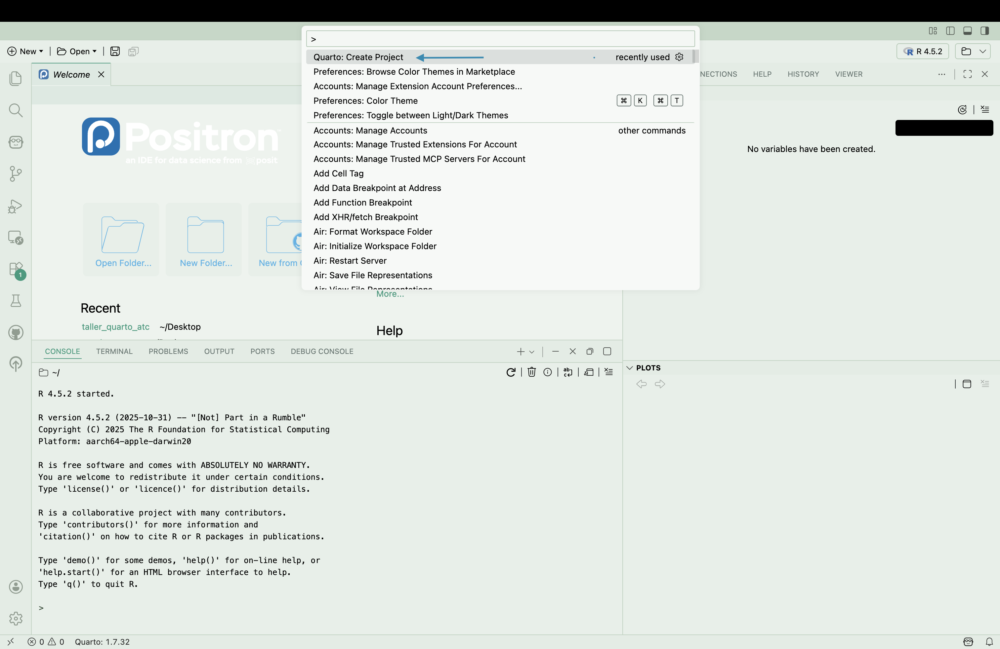

install.packages("tidyverse")
install.packages("kableExtra")
install.packages("plotly")
install.packages("quarto")Taller Quarto Abre Tu Ciencia 2026
Este laboratorio práctico introduce a los participantes en la creación de documentos dinámicos usando Quarto, una herramienta moderna para la comunicación científica reproducible. Los asistentes aprenderán a integrar código, análisis y texto en un solo documento, generar múltiples formatos de salida (HTML, PDF, Word) y crear presentaciones y sitios web profesionales que facilitan la transparencia y reproducibilidad de la investigación.
Prerequisitos
- Tener instalado R
- Descargar Quarto CLI
- Tener instalado el IDE Positron
- Descargar paquetes de R
Hacer un proyecto de Quarto en Positron
Entrar al IDE
Usar el comando
shift + control/cmd + ppara acceder a la barra de opciones

- Seleccionar “Quarto: Create Project”

- Seleccionar “Default Project”

Seleccionar una carpeta
Escribir el nombre que quieras darle al proyecto
Qué contiene un proyecto simple
El proyecto contendrá dos archivos:
_quarto.yml: es el archivo de configuración del proyecto. Todos los documentos creados dentro del proyecto se regirán por los metadatos escritos en el archivo_quarto.yml. Puedes ver más información acá.nombre.qmd: un archivo tipo con el nombre que seleccionaste para el proyecto. Muestra un esqueleto muy simple de un archivo de Quarto.
Estructura de archivos qmd
Tienen 3 componentes principales:
YAML: se escribe al inicio del documento y entre---. Determina las opciones generales para el documento. Se escribe en formato YAML el cual es un lenguaje que sirve para serializar datos y que se utiliza generalmente para hacer archivos de configuración.
Acá puedes ver las múltiples opciones que se pueden usar en quarto.
Un ejemplo simple:
---
title: Nombre de mi artículo
author: Mi nombre
format: html
---Bloques de texto: se escriben usando el lenguaje Markdown, acá puedes ver algunos ejemplos.Bloques de Código: se hacen usando la combinación de tecladoshift+control/cmd+i. En el chunk de código se puede selecionar el lenguaje de programación que se utilizará (en nuestro caso R) y se escribe código dentro de la manera usual.
```{r}
1+1
```[1] 2Cosas importantes sobre los qmd
Su directorio de trabajo es la carpeta en donde se encuentra el archivo qmd. Si meto mi archivo .qmd a una subcarpeta, las rutas que escriba tendrán que ser relativas a esa subcarpeta y no al directorio raíz.
Una buena práctica es mantener el proyecto simple con el qmd en el directorio raíz y, para proyectos más complejos que impliquen tener estos archivos en subcarpetas, utilizar el paquete {here} para construir las rutas relativas.
Bajo ningún punto utilizar en ninguna parte del proyecto rutas absolutas estilo "/Users/mi_nombre_de_usuario/Desktop/miproyecto ni tampoco cambiar el directorio de trabajo con setwd(). Esto solo hace que nuestro documento funcione solo en nuestro computador y no sea reproducible ni replicable por otros.
Uso científico
Agregar datos desde R a texto
Se hace usando la expresión en cualquier parte del texto. Podemos también usar funciones cortas dentro del código en línea para ayudarnos a dar un mejor formato.
`r mi_expresion`Podemos también usar funciones cortas dentro del código en línea para ayudarnos a dar un mejor formato.
`r round(pais1$exp, 2)`Referencias cruzadas
Se utilizan palabras reservadas. Por ejemplo para Tabla es tbl y para Figura es fig. Puedes ver el listado de prefijos acá
Para hacer una referencia cruzada debes poner dentro del chunk de código la opción label que se construye con el prefijo+nombre, y la opción prefijo-cap para poner el título de la figura.
```{r}
#| label: fig-grafico_iris
#| fig-cap: Muestra la dispersión entre Sepal.Length y Petal.Length para variedades de Iris
library(tidyverse)
iris %>%
ggplot(aes(x = Sepal.Length, y = Petal.Length, color = Species))+
geom_point()
```
Para hacer una referencia cruzada en el texto se utiliza @ + label. Así (@fig-grafico_iris) puedo referenciar a la Figura 1.
- Recomiendo ponerle etiquetas descriptivas a las tablas y figuras y dejar que Quarto ordene la numeración. Así evitamos que los nombres de etiquetas queden asociados solo a un número que deja de tener sentido cuando movemos los elementos de posición o ya no recordamos qué output era cual número.
Bibliografía
Existen varias formas de incorporar referencias en Quarto. Ahora mostraré la manera más simple pero te invito a buscar más información porque hay mucho material sobre cómo hacer citas en formatos particulares o cómo conectarse a gestores de bibliografía.
Acá te muestro cómo hacer referencias de manera simple:
Crear references.bib: podemos hacer un archivo de referencias copiando los bibtext de los artículos que nos interesa citar. Por convención lo llamamosreference.bibpero podría tener el nombre que quieras, debes almacenarlo dentro del proyecto.Agregar bibliography en el YAML: agregar en YAML la opciónbibliographyy el archivo de referencias.
---
title: Nombre de mi artículo
author: Mi nombre
format: html
bibliography: references.bib
---Arrobar: para hacer referencias en el texto se usa@etiqueta_bibtextQuarto por defecto pone la bibliografía en el último título
Para más información, visita este enlace
Parametrización
Podemos incluir en el YAML la opción params y establecer parámetros de ejecución para ese documento. Por ejemplo, que el análisis sea para el país “Chile”.
---
title: Nombre de mi artículo
author: Mi nombre
format: html
bibliography: references.bib
params:
pais_analisis: "Chile"
---Con esto, podemos luego usar la variable como params$pais_analisis en cualquier parte del código. También puede usarse esta variable para generar un código de R fuera del qmd que haga reportes de manera automática para todos los países disponibles.
Cambiar formatos de salida
Un mismo documento de cuarto puede generar varios formatos de salida, esto se configura en el YAML.
Acá hay un listado de todos los formatos de salida que se pueden generar.
En nuestro caso, los más comunes serán html para artículos web, docx para manuscritos y pdf para artículos (para generar pdfs prefiero usar typst porque con el generador por defecto me aparecen algunos errores en mi computador).
Cada formato de salida puede tener sus propias opciones:
---
title: Nombre de mi artículo
author: Mi nombre
format:
html:
theme: cerulean
toc: true
docx: default
typst:
columns: 2
bibliography: references.bib
---También podemos generar presentaciones en PowerPoint (usando
format: pptx) y presentaciones web (usandoformat: revealjs), también existen otros formatos. Recomiendo mucho hacer proyectos separados para lo que es un artículo de lo que va en una peresentación, ya que la presentación debe ser más atractiva y con menos texto.Con Quarto también podemos crear sitios web, blogs, libros, etc. los cuales podemos empezar desde 0 al elegir un tipo de proyecto en el panel inicial en Positron.

Buenas prácticas
Cualquier cifra que provenga de los datos, dejarla con código en línea y no escribirla directamente. Esto permite que si cambian mis datos ese valor se actualice de manera automática.
Ponerle etiquetas descriptivas a tablas y figuras y no hacer la numeración a mano.
No usar el mismo qmd para exportar productos que tienen un objetivo diferente. Por ejemplo: puedern ir juntos, artículo web, manuscrito y artículo en pdf, pero una presentación y un sitio web son productos con objetivos diferentes que debo pensar y estructurar de otra manera.
Utilizar rutas relativas al proyecto. No utilizar rutas absolutas ni
setwd()en los códigos.No versionar outputs sino que el archivo qmd que contiene el análisis. Esto tiene sus excepciones, por ejemplo, cuando necesito el html para publicarlo en GitHub pages.
Utilizar proyectos de quarto, sobre todo para proyectos más complejos como sitios web. Esto permite estructurar de buena forma los diferentes archivos que componen el proyecto.